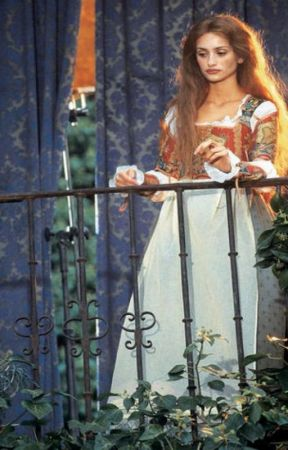

La Celestina es el personaje mas importante de la obra de Fernando Rojas. En la obra se puede ver como una hechicera y alcahueta. Era una anciana de unos 70 años, muy astuta y sabia. Algo muy curioso sobre el personaje era la capacidad que tenía para manipular a todos los personajes en su provecho. Usaba su experiencia, sabiduría y sus conocimientos en brujería para cambiar el pensamiento de las personas. Por ejemplo: Cuando por medio del conjuro hace cambiar el pensamiento de Melibea, y es por este conjuro por el que se enamora apasionadamente de Calisto y por el cual se suicida al ver que este muere. Además siempre halagaba la belleza de Melibea, por ejemplo cuando dice: "Doncella graciosa y de alto linaje, tu suave habla y alegre gesto, junto con el aparejo de liberalidad que muestras con esta pobre vieja..."(Pág. 79).
Calisto
Calisto era uno de los personajes principales de la obra. Calisto aparece como un nuevo noble, es decir, que su nobleza no era de sangre, sino que había comprado el título. En el momento que ve a Melibea se enamora perdidamente de ella, pero ella lo rechaza. Entonces, Calisto no duda en meter a Celestina por medio con tal de conseguir el amor de Melibea. Este amor se convierte en una obsesión que transforma a Calisto, y le hace actuar de forma estúpida. Por ejemplo Calisto mientras ya alucinaba dice:
"En gran peligro me veo:
En mi muerte no hay tardanza,
Pues que me pide el deseo
Lo que me niega esperanza."(Pág.97)
En una de las citas que tuvo Calisto y Melibea, Calisto se resbala por la escalera y cae en la calle donde muere.
Melibea

Melibea es otro de los personajes claves de la obra, como ya bien pudieron haber leído en la descripción de Calisto y Celestina. El personaje de Melibea se puede considerar difícil, ya que en poco tiempo su comportamiento cambia radicalmente. Ella pasa rápidamente del odio que sentía por Calisto al amor gracias a los conjuros mágicos de Celestina. Esta hace que Melibea se enamore de Calisto hasta el punto de no concebir la vida sin él, y, tras la muerte de él, no encuentra otra salida que el suicidio. De ella se dice que es una mujer muy bella (su belleza se alaba a lo largo de toda la obra) su descripción es de mujer rubia, con los ojos azules, esbelta silueta, voz suave y con una gracia especial. Se puede ver en la obra que tenía una mejor confianza con su padre que con su madre, ya que antes de suicidarse le confiesa todo a él. Una frase importante sobre Melibea es en el Acto 1 cuando le dice a Calisto y lo vota: "Mas desaventuradas de que me acabes de oír, porque la paga será tan fiera
cual merece tu loco atrevimiento. Y el intento de tus palabras, Calisto, ha sido de ingenio de tal
hombre como tú. ¿Haber de salir para se perder en la virtud de tal mujer como yo? ¡Vete! ¡Vete
de ahí, torpe! Que no puede mi paciencia tolerar que haya subido en corazón humano conmigo el
ilícito amor comunicar su deleite."(P.13).
En Resumen...
A continuación se presenta un vídeo sobre los personajes principales importantes y secundarios.